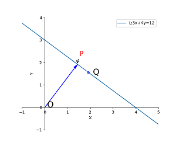
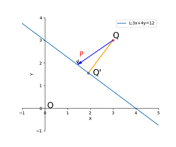

Think in geometry (part I)
1. Geometry
几何学源自古代农业生产活动中发展的测量土地技术，欧几里得的《几何原本》是古典几何的集大成。中国古代很早就发现了勾股定理、掌握了割圆术等一系列几何学知识，可惜受制于封建统治阶级的意思形态，科学技术对没有对社会生产力产生直接的推动，近现代几何学一直为西方主导。随着数学三大基础方向的发展，代数学和几何学的融合，导致解析几何的产生，分析学在几何方向催生出曲面几何、拓扑学等。几何学自身也在蓬勃发展，在欧氏几何上发展出非欧几何（黎曼几何）、微分几何、分形等科学分支。本文主要记录一些笔者在解析几何的思考。
2 Line in 2d
初中我们就学过平面的直线方程：
$$ y = kx+b\quad\quad (1) $$
老师会告诉我们这个公式(1)斜率是$k$，$b$是$y$轴偏移，但是很不幸的是，这个方程并不能表示所有的平面直线，像$x=1$这类与$x$轴平行的直线是没有办法写成(1)的，因为斜率不能为’$\infty $’!。所以在计算两点$A(x_1,y_1),B(x_1,y_1)$构成的直线时，我们需要分情况判断：
$$
\begin{cases}
x=x_1,\quad x_1=x_2 \\
y=\dfrac{y_1-y_2}{x_1-x_2}x+\dfrac{x_1y_2-x_2y_1}{x_1-x_2},\quad x_1\ne x_2
\end{cases}
$$
那么，有没有高级的方程，可以不用搞这么麻烦呢？答案是有的，高中老师告诉我们，直线有一般方程，可以统一描述所有直线：
$$
ax+by+c = 0\quad\quad (2)
$$
这个方程倒是解决了上述问题，但是初次接触是不如（1）式直观，参数$a、b、c$在当时看来没有几何意义的，对比（1）里面的斜率和截距$k、b$就很直观，而且参数还多了一个。一般方程的几何意义在学习了向量之后才会比较明确，我们先回忆下向量相关的基础知识，向量也叫矢量，具有方向，一般第一次接触都是用笛卡尔坐标来描述，就是$x-o-y$轴上的分量来给定向量坐标，大部分高中生都默认这个为向量的定义，但其实向量在代数学中是和向量空间一起定义的，一组向量基构成一个向量空间，而向量是这些基的线性组合，由于向量空间具备封闭性，向量的线性组合仍然位于空间内，直观解释就是，将平面内的任意向量线性相加仍然在平面内，三维的向量$\bar{v}$在基坐标$(1,0,0)、(0,1,0)、(0,0,1)$的线性组合下仍然位于三维空间内，这个线性组合的系数正是向量坐标：
$$
\vec{v} = x\cdot(1,0,0)+y\cdot(0,1,0)+z\cdot(0,0,1)
$$
向量具备一些基本性质，如线性性、交换性等，这些都是向量空间的基本性质，只不过限于初次接触时知识不够，没有办法了解，到后面学习了高等代数和向量空间，这些都是自然而然的结论。向量有两种重要的运算，即内积和外积，向量内积的定义为：
$$
\vec{a}\cdot \vec{b} = |a|\cdot |b|cos<a,b>\quad \quad (3)
$$
内积是一个标量，其大小等于两个向量的长度积乘两向量夹角的余弦。向量长度定义为$\sqrt{x^2+y^2}$，几何意义就是距离坐标原点的距离（由勾股定理得）。内积也可以写成:
$$
(a,b)\cdot(c,d) = ac+bd \quad\quad (4)
$$
（3）和（4）是如何等价的？这个也困扰了我很久，直到我知道了欧拉公式：
$$
e^{ix}=cosx+isinx \quad\quad (5)
$$
将$\vec{a}\cdot \vec{b}$写成$\vec{a}=r_1(\cos \alpha ,\sin \alpha)=r_1e^{i\alpha},\vec{b}=r_2(\cos \beta,\sin \beta)=r_2e^{i\beta}$，内积可以写成：
$$
\vec{a}\cdot \vec{b} = r_1\cdot r_2\cdot e^{i(\alpha-\beta)} = r_1 cos\alpha \cdot r_2 cos\beta + r_1 sin\alpha \cdot r_2 sin\beta + i r_1 r_2sin(\alpha-\beta)\quad\quad (6)
$$
上式中的实数部分(位于平面内)正好就是$ac+bd$，虚数部分的含义有点迷，暂时也不用管了（这个是外积部分，在平面外）。
内积可以推导出一些有用的结论，其中常用的是同方向和垂直的判定：
1.如果两个向量方向一致，那么它们内积为其长度积:$\vec{a}\cdot \vec{b} = |a|\cdot |b|$. 2.如果两个向量互相垂直，那么它们内积为0:$\vec{a}\cdot \vec{b} = 0$,若$\vec{a}=(a,b),\vec{b}=(c,d)\Rightarrow a/b=-c/d$ 3.向量和自身的内积为其长度的平方:$\vec{a}\cdot \vec{a} = |a|^2$ 4.向量$\vec{a}$在另一个向量$\vec{b}$的投影可由内积计算，$Prj_{a_b} =\dfrac{\vec{a}\cdot \vec{b}}{|\vec{b}|}$，其中$\dfrac{\vec{b}}{|\vec{b}|}$为$\vec{b}$同向的单位向量。
这些结论都是显而易见的，依据这些结论，我们可以发现(1)(2)之间的联系，并找到(2)中参数$a,b,c$的几何意义。

如上图所示，我们可以修改直线定义为：L为满足下条件点的集合$给定L上一点P,\forall Q \in L:Q\ne P,st.\vec{PQ} \perp \lambda$，其中的$\lambda$是法向量：
由于$\lambda$垂直于L的平行线(从（1）易知斜率相等的直线平行)：$ax+by=0$,
取一点$S(b,-a),st. \lambda \perp SO$，
可得$\lambda\cdot(b,-a)=0\Rightarrow\lambda=(a,b)$，
不失一般性，可将$P$定义为L距离原点最近的点，有:
$$ \because \vec{OP} \parallel \lambda，P\in L,let \space P=k\lambda=k(a，b)\\ \therefore (ka)a+(kb)b+c=0 \Rightarrow k = \dfrac{c}{a^2+b^2}\\ let\space d=\sqrt{a^2+b^2},then \space P=(\dfrac{-ac}{d^2},\dfrac{-bc}{d^2})\\ \forall Q= (x,y)\in L,PQ\perp\lambda\Rightarrow(QO-PO)\cdot\lambda=0\\ \therefore (x-\dfrac{-ac}{d^2})a + (y-\dfrac{-bc}{d^2})b = 0,ie：ax+by+c=0\\ especially,|OP|=|（\dfrac{-ac}{d^2},\dfrac{-bc}{d^2})|=|\dfrac{c}{d}|=\dfrac{|c|}{\sqrt{a^2+b^2}} $$ 综上所述，（2）里面的参数其实是有具体的几何意义的：$(a,b)是法向量，c和直线离原点的距离相关$。在计算时为了方便，会将$a，b，c$除以$d=\sqrt{a^2+b^2}$标准化后为单位法向量和距离。
还有一种形式的直线方程，将P点在方向矢量$(b,-a)$上进行延展，即直线的参数方程$L(x,y)=P+t(b,-a)$: $$ L=\begin{cases} x=\dfrac{-ac}{d^2}+bt \\ y=\dfrac{-bc}{d^2}-at \end{cases},t\in (-\infty,\infty);当t=0时，为离原点最近点P \quad\quad (7) $$ 点$Q（x’,y’’)与L$的距离可使用向量方法求解，如下图示，$P(x,y)$为L上任意一点，$Q’$为Q在直线L上最近点:

$$ \because P \in L,\therefore ax+by=-c\\ \vec{QP}=(x’-x,y’-y),|\vec{QQ’}|为我们要求的距离,可看做\vec{QP}在L单位法向量上的投影：\\ \because \vec{QQ’} \parallel (a,b)\\ \therefore |\vec{QQ’}|=|\vec{QP}\cdot \dfrac{(a,b)}{d}| =|\dfrac{ax’+by’-(ax+by)}{d}|= \dfrac{|ax’+by’+c|}{\sqrt{a^2+b^2}}.\blacksquare $$ 特例是$dist=0$时P’在L上。上面的方法也可推广到3维空间。
一般来说，普通计算使用（1）就够了，如果涉及到证明或者向量计算会用（2）,这个也是使用最广泛的（因为可以推广到3维平面），参数方程是使用的较少，一般用于绘制图形，比如在python的matplotlib库中，需要给定两个数组[x]、[y]给plot函数,使用参数方程就很方便（也可以使用斜率方程， 但是参数方程一般是靠近原点方便查看）:
import numpy as np
import matplotlib.pyplot as plt
from matplotlib import style
#创建画布
fig = plt.figure(figsize=(6, 5)) #set figure size.should accord axis range!
ax = plt.gca()#axisartist.Subplot(fig, 111)# get current axis 获得坐标轴对象
ax.axis([-1, 5, -1, 4]) # 设置坐标范围[x_min,x_max,y_min,y_max]
plt.xlabel('X')
plt.ylabel('Y') #设置坐标轴的文字标签
ax.spines['right'].set_color('none')
ax.spines['top'].set_color('none') # 将右边 上边的两条边颜色设置为空 其实就相当于抹掉这两条边
ax.xaxis.set_ticks_position('bottom')
ax.yaxis.set_ticks_position('left') # 指定下边的边作为 x 轴 指定左边的边为 y 轴
ax.spines['bottom'].set_position(('data', 0)) #指定 data 设置的bottom(也就是指定的x轴)绑定到y轴的0这个点上
ax.spines['left'].set_position(('data', 0))
# solve the L :3x+4y-12=0 param-equation
t = np.arange(-5,5,0.1)
x = 36/25 - 4*t
y = 48/25 + 3*t
plt.plot(x,y)
# set line markert
plt.legend(['L:3x+4y=12'], loc='best')